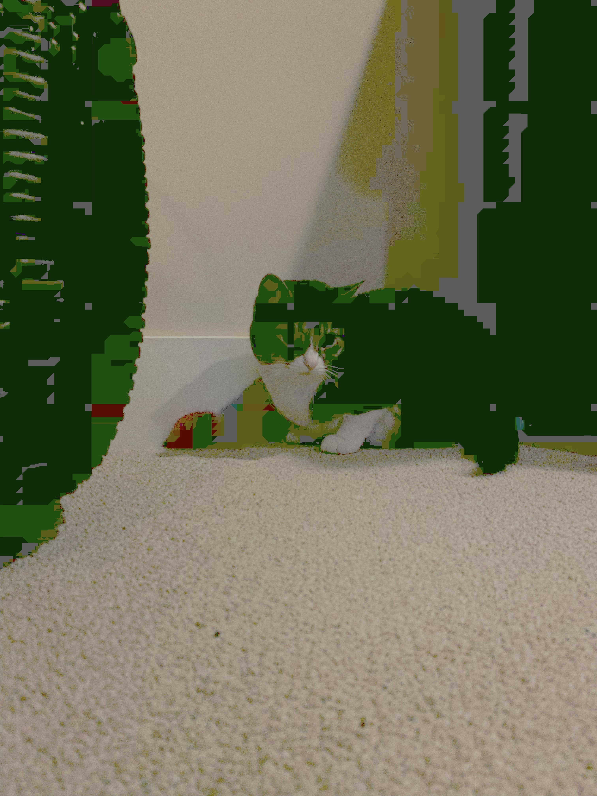
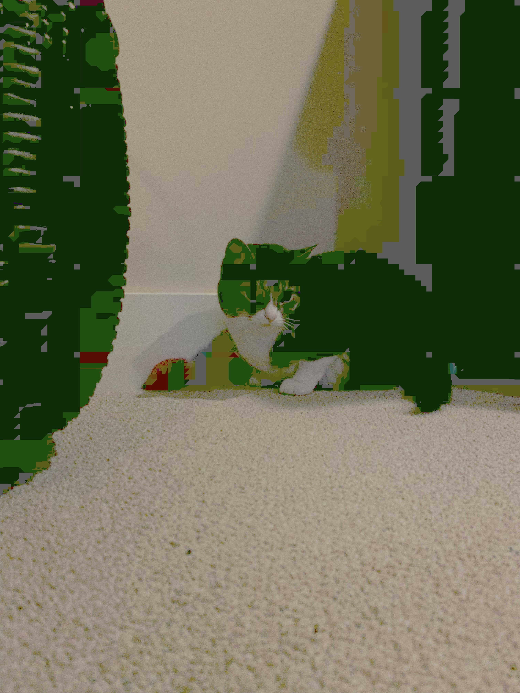

Breakdown Of How I Develop Creative Pieces
Thought Process:
Step 1: Starting point
Whenever I start a piece I generally start using one of three starting points. They are ordered by general effectivness, how easy or difficult they are to work with, and how much time is consumed in the overall proccess.
-
Start From a Prexisting Idea.
This starting point is the most efficient way to create a worthwhile piece that provides the best level of motivation, least amount of development time, and a higher probability of creative success. What differs from the other two, is that you have a fraction of the plan for your art thought out before you attempt to make the piece. Often times at this point you may have an almost complete plan.
-
Improvized Start
This starting point can vary in effecincy, but is a common start that many creative pieces start from. Often times you may find/think of a decent idea relating to your piece, but have only just started developing your plan.
-
Lack of Creative Spark
If you are an artist, or are working on developing an idea, this staring point is the worst, most nightmarish start you can have. If you are lacking time, avoid this like the plague, unless you have no other choice. At this point your are very unlikly to develop anything worthwhile. When you are at this stage, absolutly no ideas are forming in your brain for an extended length of time. When this happens it is more effective to work with a new idea. This commonly occurs when you are working with a prompt/idea that someone else devised and it does not speak to you for some reason or anouther. Although this starting point is often frustrating, its defining factors make it a very good way to practice creativity and challenge oneself to the limit.
Step 2: Stick to a Plan or Branch Out
I choose a specific path from my devised plan, or I think of new ways I can make slight alterations to my orignial idea. Sometimes this step is already completed in the previous step. However, even if you have already planned a differnt branch or secondary idea most can branch out further.
Working Process:
Specific Methods or Techniques
Methods Regularly Used:
-
Reference Photos
-
Grid Scaling
-
Rule of Thirds
-
First Layer Single Coloration
-
Step Back Idealogy
Strengths & Weaknesses:
Observational Studies
The act of meticulously observing the world arround you in order to learn and be inspired by specific aspects. This is not to be confused with observational drawing. Which entails the observer to draw as realistically as possible a specfic subject that they observe in a moment in reality.
Grand Forest Observation
Texture:
Color:
Unitentional Observational Finds
Most Stressful Moments:
"Reflecting Nature"
Untitled: Red Panda Scultural Vase
Unforgetable Life Lessons From Failure:
Untitled: Cottage/House Wall Hanging piece
Original Art/Technique(s) I Have Developed:
Color Distortion Editing Technique


 
